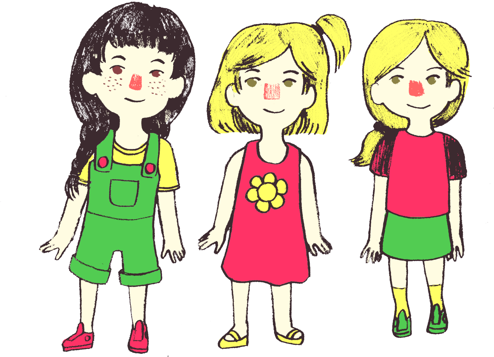

Three little girls sat on the porch, wishing there was something fun to do. Little Connie had come to play for the afternoon at the McNamara house. Sisters Nancy and Pam loved to play with Connie, even though she could be a little mischievous at times.
“Let’s help out and do the grocery shopping!”